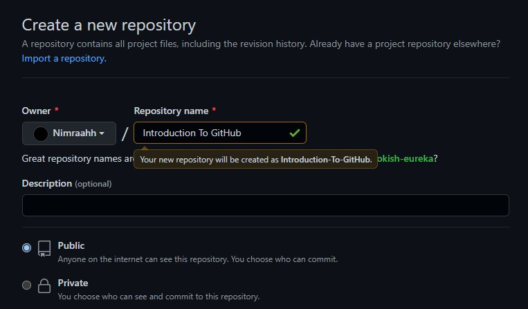
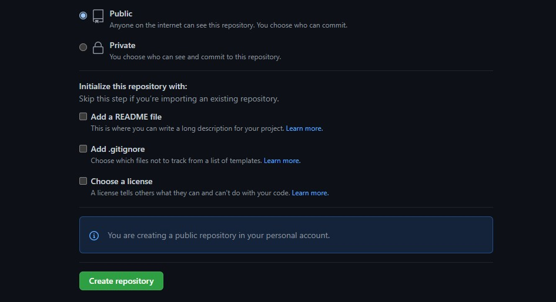
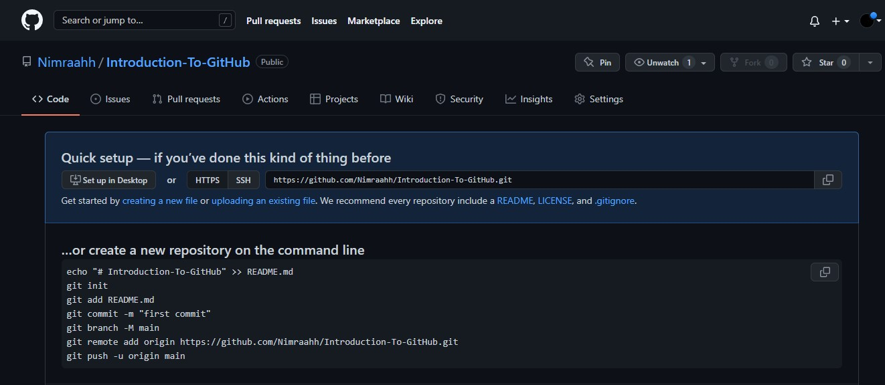
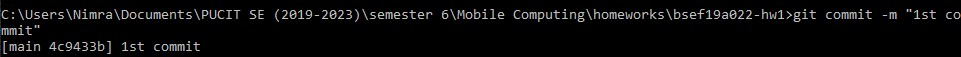
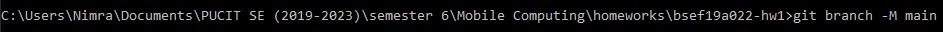
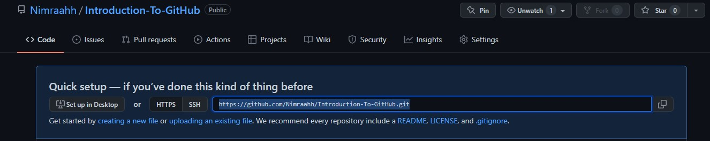
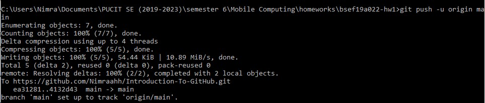
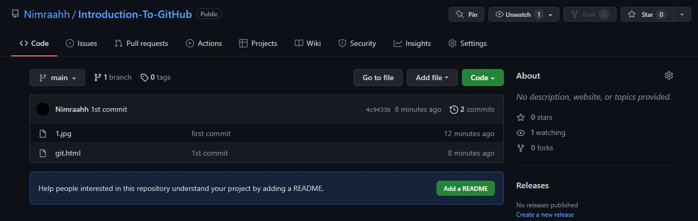
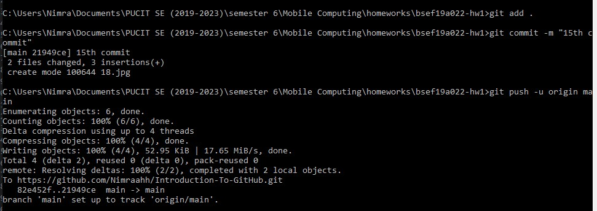

Welcome To GitHub
1-Create an HTML file in your folder

2-Overwrite your file path with "cmd"

3-A dialog box will be opened

4-Write "git init" and press enter

5-A hidden folder will be created in your folder named ".git"

6-Check the status of files using a command named "git status"

7-All files are shown in red color because none of them is added in repository
8-You may use "git add name.extension" command to add a single file in your repository

9-Let's check for file status using "git status"

10-The newly tracked file "git.html" is tracked. We can also use a command named "git add .". This command will add all the files in the repository

11-Let's check for all tracked files status using "git staus"

12-Create a public/private repository in GitHub

13-Scroll down and click on "Create repository" button to add new

14-Your repository has been created

15-Let's start committing

16-Now connect your online and local repository by typing a command named "git branch -M main"

17-Let's get online repository link which is to be added in local one

18-Now write "git remote add origin linkYouGotFromOnlineRepository". Here linkYouGotFromOnlineRepository is the link of your online repository

19-Now you can start pushing your files in your online repository using a command named "git push -u origin main"

20-Let's check online repository where we uploaded our first image and a modified html file

21-Continue committing all your files
22-Now if you modify or add any file in your folder, you will have to add it in your local repository first using command "git add fileName.extension" or "git add .", then use a command named "git commit -m "commit name"" and then finally push all the newly created or modified files in the online repository using "git push -u origin main"

23-All your files should be uploaded to online repository.